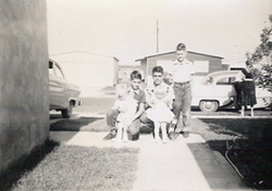
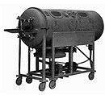

When my freshman year came to a close, plans were put in action for the Trotter boys to spend the summer with our mother. George, her husband, had found a job in Tucson, Arizona. So they loaded up their twins. Pamela and Steve, now about 14 months old, and left their home in Kansas City near the end of May. Making a short stopover in Gove, they gathered us up and we all headed west, to cowboy country. George and Mother found a house in a new housing development, where all the units looked like photocopies of one initial unit, a construction style typical of the mid-50s. It looked to me like the inspiration for the famous song, by Pete Seegar, "Little Boxes (Ticky Tacky)". It was so new that there were no trees to be seen, and very few lawns of grass around each house. It was also very hot and dry. Not a good place to spend a great summer vacation.
One day Gary and I met a man who worked for a newspaper. He said he needed some delivery boys in this neighborhood. Each newspaper cost 15 cents. We could keep 4 cents for every paper sold. We were thrilled, we had a job now. The arithmetic was simple enough and I had had a paper route five years before when I lived in Belpre. So we gave it a try. Either we were bad at sales or it was not a good product. We certainly didn't get rich, but we got a lot of exercise lugging those newspapers all over the area.
In order to pass the time, I began a scrap book. The principal topic of my collection was a natural one for any young teenage boy: cars. I looked through the pages of all the glossy magazines I could get my hands on, searching for pictures of the latest automobile models being advertised. I had no preference as to the "make"; Ford, Chevrolet, Plymouth, up to Cadillac, it didn't make any difference to me, I used my scissors on them all. After gluing the pictures in the book, I would spend hours pouring over the pages, familiarizing myself with the shapes of the various models so that when traveling in the streets or on the highways, I could call out, "There goes a ___!" In addition to cars, I also collected pictures of military aircraft. My specialty was jet propelled planes, like the F-80, the F-84, the F-86 Sabre, and my all-time favorite, the B-47 Stratojet. Several years before, my parents had bought a T-shirt for me with a large color image of this bomber on the front. I wore that T-shirt a lot, and always with great pride.
Tucson is a major town in the southern part of Arizona. Therefore, it is not far from the border with Mexico. We took advantage of this geographic proximity one Saturday or Sunday to drive down to Nogales, a for-real Mexican border town. Of course, I was especially excited. Finally, I was going to get my first opportunity to be inside a land where Spanish was the native language. Unfortunately, I hadn't learned enough of the language from that old textbook of my mother's back in Caney. In spite of being a gringo tourist, it was a delightful adventure for me, a true beginning.
The only other event worthy of note during our stay here in Arizona was a visit to Old Tucson. This is a famous and educational tourist attraction where one can begin to understand what life was like in the Old West over a hundred years ago. It has served as the production site for many Western movies over the years. Nearby is another interesting place that we visited: the Arizona-Sonora Desert Museum. It was a pleasant outing. In sum, the month we spent in Arizona wasn't all for naught.
* *** * We only spent a month in Tucson. At the beginning of July, George decided that we should move to San Diego, California. I assume that he found better employment there. Whatever the reason, the environment was quite different. First of all, there was the Pacific Ocean. We took several trips to the beaches to enjoy the waves on a sunny afternoon. Once we visited the famous San Diego Zoo. The military bases in the surrounding area provided me with a free air show as the planes flew in the city skies above our heads. Watching these planes and talking with George about his days flying in the war (WWII) stimulated in me the dream of being a pilot someday. When we went shopping, I would gravitate to the model plane section. I purchased some kits that I planned to put together upon my return to Kansas. One of these kits was for (you guessed it!) a B-47.
San Diego is also quite close to the U.S.-Mexico border and the famous city, Tijuana. So naturally, we made another touristy excursion there on at least one occasion. This caused my love affair with things Spanish to grow another degree larger.
Soon it was time for the summer vacation to end and time to think about school again. Toward the middle of August, Dad and Donna arrived to pick me and my brothers up. (The photo shows the last snapshot of me taken before the polio attack.)

My father had relatives who lived in Stockton, California, north of San Francisco, so we traveled back by that route. While there, we went swimming in a municipal pool, an act that may have been a factor in a major event soon to take place in my life.
About two weeks remained before classes were to begin for my sophomore year. I spent this time in a variety of ways, like playing baseball, going swimming in a little pond in some farmer's field, visiting with Ardis in her home (!), but mostly getting used to a new step-mother around the house. Donna was nice, of course, but I was still quite adamant as to accepting her, let alone call her by the name "Mother". She and I made a pact regarding the household chore of washing the supper dishes. I promised her that if I did not get selected as the 10th man on the "A" team for basketball later that fall then I would wash the supper dishes before leaving the house for the games. Otherwise, I got the "night off" automatically. It was going to be difficult to beat out Jimmy D., but I didn't want to wash those ol' dishes anymore than I had to.
The first two days of September were as lazy as any other day. The 2nd of this month was a Friday. As I went to bed that night, I began to feel somewhat restless and uncomfortable. I had a headache, which was unlike me, plus pains in my back and stomach. I tossed and turned in my bed, but nothing seemed to help. So around 10 o'clock or thereabouts I went downstairs to tell my parents. They consulted for a few moments, then decided it might be wise to take me to the hospital - just to be on the safe side. Dad and I got in our car and headed off to Quinter, as we had done only a mere ten months earlier. Once there, a physician examined me briefly, especially my reflexes in my knees. All seemed okay, but he thought it might be wiser to leave me there for the following day for continued observation.
The next day I felt well enough to get out of bed and walk around the hospital. I made a bee-line to the laboratory to visit my friend that I made there the past November. Later on, in the evening I felt the urge to "do #2". As I had begun feeling a little unsteady on my feet, I requested the assistance of a nurse to walk over to the toilet that my room shared with the adjoining one. When I sat on the stool, she saw that I was quite woozy and might fall if she removed her hand from my shoulder. But I, on the other hand, lost all desire to do anything so private with a strange woman looking on. So I said to her, "Well, if you're not going to let me go, I might as well go back to bed." Draping my right arm over her shoulders and using her as a human crutch, I took my final steps in my life, getting back the few feet necessary to reach my bed once more.
Sunday is a blur in my memory now. Surely Dad and Donna came to visit me, as they undoubtedly had done the day before, bringing me some comic books to read to pass the time. Monday is a different matter. In the middle of the afternoon as I lay on my back, I tried to reach a comic book that was on a bed stand to my left. My right hand was virtually useless for anything by now, and I noted that it required a lot of effort just to get my left one to make contact with the comic book. For several minutes I labored strenuously to drag that book over to me. Finally, I managed to get it upon my chest, but could not hold it upright in order to read. I thought to myself, "Gee, if it means that much work, it's not worth the trouble." Resting my hand on my chest, I just waited for my parents to come see me soon. Perhaps the strangest aspect of this whole event was that I wasn't concerned or worried about my inability to move my arms and legs normally. Never once did I say to myself, "Hey, I can't move my body. Why is this? What's going on here?" That's just the way things were.
When they arrived, they sized up the situation quickly, and knew something was seriously going wrong. They called for a doctor to look at my condition. I could move nothing except my face and neck muscles, and my breathing was very shallow. A bellows-type device was brought in and they asked me to blow into it. I couldn't even make it budge. Then they decided to do a spinal tap, that is, inject a needle into the spinal cord and take a sample of fluid to examine under a microscope. As they rolled me over on my side and painted my back with some orange stuff, I thought they were just going to give me a shot of medicine of some sort. Now I've been told since that spinal taps are quite painful. I wouldn't know because all I felt was a small prick for a few seconds, and it was all over. A short while later, the laboratory reported the results of their analysis - polio!
Right away everybody sprung into action. The nearest hospital that could take care of a polio patient was St. Anthony's Hospital in Hays, about 30 miles away. Contact was made with the authorities there. An ambulance was obtained. My father accompanied me, with oxygen tanks by our side, just in case. We arrived shortly and without any trouble. I did not have to make use of the oxygen, in spite of my grave difficulty breathing. I was wheeled down some dimly lit hallways as it was around midnight by now. I was transferred from the gurney to a bed. Then the doctor who was waiting for us proceeded to explain about the next step. He said they were going to put me into a device, commonly called an iron lung. (See illustration.) This would make my breathing easier for me, even effortless. And that I should not worry now, just relax.
They carefully placed my body inside, leaving my head outside. There was an air-tight seal around my neck. The machine was turned on, and soon I was learning how to breathe with this apparatus. A new life was now beginning for me. September 6, 1955 I was born again.
| Comments? Send e-mail. |
Back to top |
Go back to Contents |
{kind=link}